library(tidyverse)
library(sf)
library(rnaturalearth)
africa <- ne_countries(continent = "Africa",
returnclass = "sf")12 Spatial Data Modelling and Visualisation
Learning Objectives
- Learn how to model and visualise spatial data
- Understand the concepts of spatial data, spatial data models, and spatial models
- Create maps, simulate infections, and predict the spatial distribution of phenomena
In the previous chapters, we explored the fundamentals of data visualisation with various techniques for creating static and interactive plots. In this chapter, we will learn how to model and visualise spatial data, which involves analysing and representing data with spatial components. We will explore the concepts of spatial data, spatial data models, and spatial models, and learn how to create maps, simulate infections, and predict the spatial distribution of phenomena such as disease spread. By combining spatial data with machine learning techniques, we can model the spatial dynamics of disease transmission and assess the risks associated with the spread of infections. We will use various packages such as sf, ggplot2, and gstat to create spatial models and visualisations, and gain insights into the spatial distribution of infections in a specific region.
12.1 Spatial Data, Spatial Data Models and Spatial Models
Understanding the spatial distribution of phenomena such as disease spread, land cover changes, or climate patterns requires the use of spatial data and spatial models. These tools are essential for analysing and predicting spatial processes and for informing data-driven decisions in public health, environmental management, and urban planning.
A notable example is the Ebola Virus Disease outbreak in West Africa (2014–2016). The virus spread across countries like Guinea, Liberia, and Sierra Leone, driven by factors such as population density, healthcare infrastructure, and human mobility. By analysing spatial data on cases, fatalities, and healthcare facilities and applying spatial models to simulate the virus’s spread, researchers gained valuable insights into the dynamics of the outbreak. This analysis helped identify high-risk areas for targeted interventions.1
But what exactly distinguishes spatial data, spatial data models, and spatial models?
- Spatial Data: This refers to data that includes geographic coordinates, addresses, or boundaries, representing the physical location of objects or events. Spatial data can be stored in two main formats: vector and raster. Vector data models use geometric shapes (points, lines, polygons) to represent features such as roads, cities, and boundaries. Raster data models, on the other hand, use a grid of cells or pixels, each with a value representing a variable like temperature, land cover, or elevation.
- Spatial Data Models: These are frameworks for organizing and representing spatial data. They provide the structure for connecting real-world phenomena with their digital representation through algorithms and spatial primitives (like spatial relationships and topology). Spatial data models form the foundation for managing and processing spatial information, enabling meaningful analysis and visualization.
- Spatial Models: Unlike spatial data models, which organize data, spatial models simulate dynamic spatial processes—phenomena that change over time. Examples include the spread of infectious diseases, flood development, or land use changes. Spatial models are crucial for understanding and forecasting the evolution of spatial phenomena, allowing researchers and decision-makers to plan interventions and management strategies effectively.
For further information on spatial data models and spatial process models, refer to the ArcGIS documentation for guidance on solving spatial problems and the Esri blog for in-depth discussions on spatial analysis. Additionally, R-Spatial.org offers a wealth of resources on spatial data analysis, including tutorials and the latest developments in the field.
12.2 Making a Map
To learn how to make a map we first need spatial data. There are various sources and packages that provide spatial data for different regions and purposes. One such package is {rnaturalearth}, this package contains various types of boundaries of countries in the world. For more information type ?rnaturalearth. In particular, we use the ne_countries() function to get the boundaries of Africa, with the option returnclass = "sf" to return the data as simple features.
A simple feature object is a type of spatial data that contains the geometry of the spatial features (e.g., points, lines, polygons) and additional attributes such as the name of the country, population, and other information.
This is a simple map of Africa, but we can make it more interesting by adding some colours to the countries. A better resolution of the colored map can be found in the online version of the book.
ggplot(data = africa) +
geom_sf() +
coord_sf()
# Africa with colours
ggplot(data = africa) +
geom_sf(aes(fill=name),
color= "white",
linewidth = 1,
show.legend = F) +
coord_sf()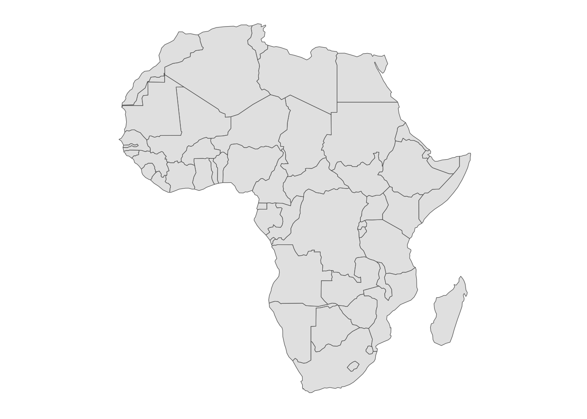
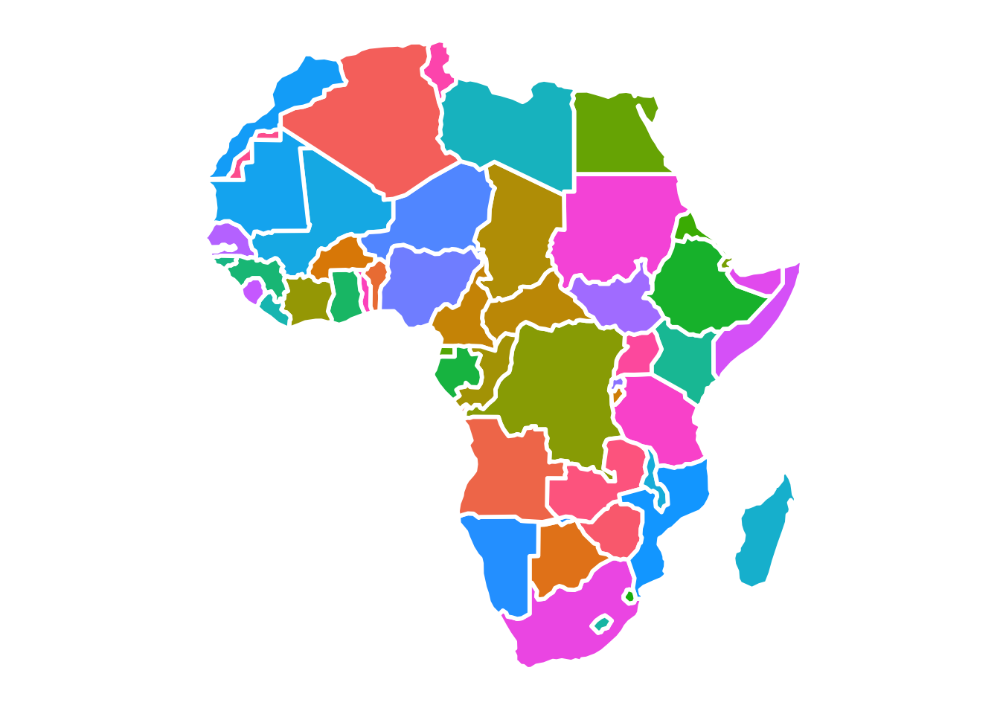
12.3 Coordinate Reference System (CRS)
A Coordinate Reference System (CRS) is a standardised way of defining the spatial location of features on the Earth’s surface. It uses a set of coordinates to represent the position of points, lines, and polygons in space. There are different types of CRS, such as geographic and projected CRS, which are used to represent the Earth’s surface in different ways. Geographic CRS (LatLong) represents locations on a curved surface using latitude and longitude for global mapping, while projected CRS or Universal Transverse Mercator (UTM) projects the curved Earth onto a flat map, using metres for precise mapping. In particular, the UTM system provides the distance in metres from the equator and the central meridian of a specific zone.
We use the {sf} package to define and transform CRS. The st_crs() function allows you to retrieve the CRS of a spatial object, while the st_transform() function allows you to transform the coordinates of a spatial object to a different CRS.
africa_crs <- st_crs(africa)
africa_crs
#> Coordinate Reference System:
#> User input: WGS 84
#> wkt:
#> GEOGCRS["WGS 84",
#> DATUM["World Geodetic System 1984",
#> ELLIPSOID["WGS 84",6378137,298.257223563,
#> LENGTHUNIT["metre",1]]],
#> PRIMEM["Greenwich",0,
#> ANGLEUNIT["degree",0.0174532925199433]],
#> CS[ellipsoidal,2],
#> AXIS["latitude",north,
#> ORDER[1],
#> ANGLEUNIT["degree",0.0174532925199433]],
#> AXIS["longitude",east,
#> ORDER[2],
#> ANGLEUNIT["degree",0.0174532925199433]],
#> ID["EPSG",4326]]For example, the CRS of the Africa map is WGS 84 or World Geodetic System 1984 which is a reference system for the Earth’s surface that defines origin and orientation of the coordinate axes, called a datum (a fact known from direct observation). The EPSG is a structured dataset of CRS and Coordinate Transformations, it was originally compiled by the, now defunct, European Petroleum Survey Group2. The EPSG code for WGS 84 is 4326.
12.4 Example: Simulation of Infections in Central African Rep.
Synthetic data are created for the Central African Republic. The simulation of the number of infected individuals, their location, and temperature levels are obtained with random numbers generating functions from the {stats} package, which is a base package.
The Central African Rep. is a landlocked country in Central Africa, with a population of approximately 5 million people. The country is known for its diverse wildlife and natural resources, and has faced challenges such as political instability and armed conflict.
ctr_africa <- africa %>%
filter(name == "Central African Rep.")12.4.1 Bounding Box
We can use the st_bbox() function to retrieve the bounding box of the ctr_africa object, as a matrix with the minimum and maximum values of the coordinates. A bounding box is a rectangular area defined by two points: the lower-left corner (minimum values of the coordinates) and the upper-right corner (maximum values of the coordinates). It provides a quick way to determine the spatial extent of a region and is often used in spatial analysis to define the boundaries of a study area.
bbox <- ctr_africa %>% st_bbox()
bbox
#> xmin ymin xmax ymax
#> 14.45941 2.26764 27.37423 11.1424012.4.2 Spatial Coordinates
The st_coordinates() function allows to extract the coordinates from a geometry vector and release a matrix with 5 columns, where the first two columns are the longitude (X) and latitude (Y), and the other are indexes to group the coordinates into polygons.
The as.data.frame() function converts the matrix to a data frame, and the dplyr::select() function selects the longitude and latitude columns. The summary() function provides a summary of the data frame, including the mean, median, and quartiles of the longitude and latitude values.
ctr_africa_coords <- ctr_africa %>%
sf::st_coordinates() %>%
as.data.frame() %>%
dplyr::select(X, Y)
ctr_africa_coords %>%
summary()
#> X Y
#> Min. :14.46 Min. : 2.268
#> 1st Qu.:16.58 1st Qu.: 4.648
#> Median :20.96 Median : 5.354
#> Mean :20.70 Mean : 6.294
#> 3rd Qu.:24.26 3rd Qu.: 8.145
#> Max. :27.37 Max. :11.142Synthetic data are created as an image of the spread of infections observed in Central Africa on a specific point in time. Data are generated using random numbers for the number of infected individuals, their location, and temperature levels. The temperature levels consider a min of 20.3 degrees Celsius (69 degrees Fahrenheit), a maximum of 29.2 °C (85 °F), and a daily average of 24.7 °C (76 °F).
The synthetic data are created using the rbinom(), rnorm(), and rpois() functions from the {stats} package. Data are generated for 100 locations in Central Africa, with 70% of the locations infected and 30% non-infected. The latitude and longitude values are generated using the rnorm() function with mean values of 6.294 and 20.70, respectively. The number of infected individuals is generated using the rpois() function with a mean value of 10, and the temperature levels are generated using the rnorm() function with a mean value of 25.
Set the number of points:
num_points <- 10012.4.3 Data Simulation
set.seed(21082024) # set seed for reproducibility
# simulate the presence of infection
# 1 = "infected" and 0 = "non_infected"
longitude <- rnorm(n = num_points, mean = 20.70, sd = 1)
latitude <- rnorm(n = num_points, mean = 6.294, sd = 1)
presence <- rbinom(100, 1, prob = 0.3)
cases <- ifelse(presence == 1,
rpois(n = num_points*0.7, lambda = 10), 0)
temperature <- rnorm(n = num_points,
mean = 24.7,
sd = (29.2 - 20.3) / 4)
# build a dataframe
df <- data.frame(longitude, latitude,
presence, cases, temperature)
head(df)
#> longitude latitude presence cases temperature
#> 1 21.09134 6.052162 0 0 20.58159
#> 2 22.25082 7.814450 0 0 29.77619
#> 3 21.52356 6.101959 0 0 23.97023
#> 4 19.76787 6.004291 0 0 28.53059
#> 5 21.25535 5.239799 0 0 22.16691
#> 6 20.10175 7.256303 0 0 20.66836The str() function allows to inspect the structure of the data frame, showing the type of each column and the first few rows of the data frame.
df %>%
filter(presence == 1) %>%
head() %>%
str()
#> 'data.frame': 6 obs. of 5 variables:
#> $ longitude : num 18.8 20.3 22.9 20 20.1 ...
#> $ latitude : num 4.54 5.09 6.21 8.42 7.63 ...
#> $ presence : int 1 1 1 1 1 1
#> $ cases : num 13 10 11 13 9 9
#> $ temperature: num 24 27.3 25.2 25.1 24.2 ...ggplot() +
geom_sf(data = africa) +
geom_sf(data = ctr_africa, fill = "brown") +
labs(title = "Map of Africa and Central African Rep.")
ggplot() +
geom_sf(data = africa) +
geom_sf(data = ctr_africa,
fill = alpha("brown", alpha = 0.2)) +
geom_point(data = df,
aes(x = longitude, y = latitude,
color = factor(presence)),
shape = ".") +
labs(title = "Synthetic Data Visualisation",
color = "Infection Status") +
theme(legend.position = "top")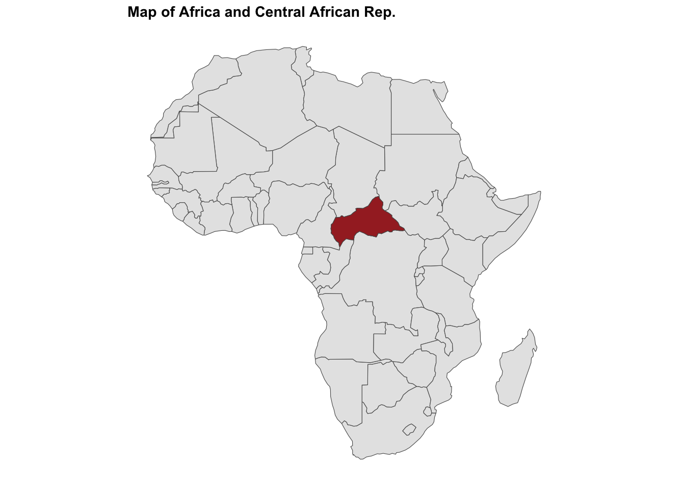
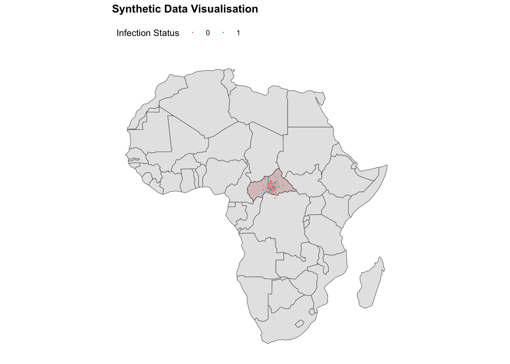
12.4.4 Correlation between Response and Predictor
The correlation coefficient between the number of infected individuals and the temperature can be calculated using the cor() function with the method set to “pearson”. This will provide a measure of the strength and direction of the linear relationship between the two variables. A correlation coefficient close to 1 indicates a strong positive linear relationship, while a coefficient close to -1 indicates a strong negative linear relationship. A coefficient close to 0 indicates no significant linear relationship between the variables.
cor(df$cases, df$temperature, method = "pearson")
#> [1] -0.05243272The correlation coefficient is -0.052, suggesting that there is a weak negative linear relationship between the number of infected individuals and the temperature. This indicates that as the temperature increases, the number of infected individuals decreases slightly, but the relationship is not significant.
12.4.5 Histogram and Scatter Plot
To visualise the distribution of the presence of infection in Central Africa, we can create a histogram of the presence variable using the geom_bar() function from the {ggplot2} package. The histogram shows the frequency of infected and non-infected locations in Central Africa, with the x-axis representing the presence of infection and the y-axis representing the count of locations.
ggplot(data = df,
aes(x = factor(presence))) +
geom_bar() +
labs(title = "Histogram of Presence of Infection",
x = "Presence",
y = "Count") +
theme_minimal()
ggplot(data = df %>% filter(presence== 1),
aes(x = temperature, y = cases)) +
geom_point() +
geom_smooth() +
labs(title = "Infected Individuals based on Temperature",
x = "Temperature",
y = "Number of Infected Individuals") +
theme_minimal()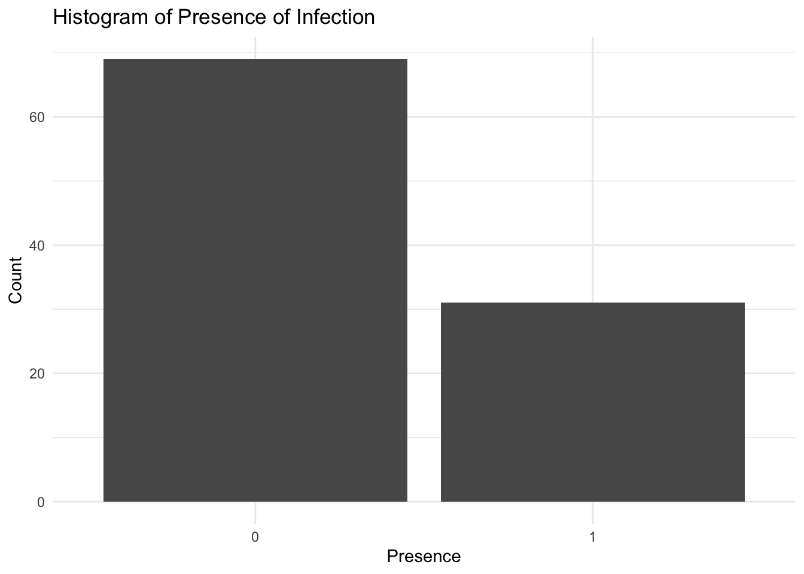
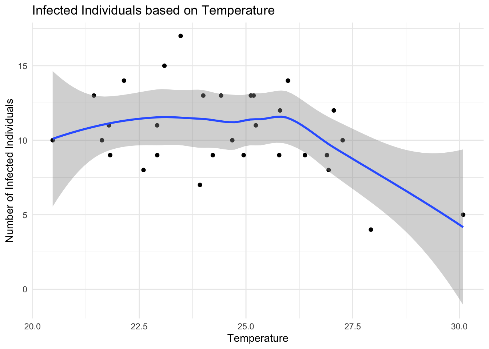
The scatter plot shows the temperature on the x-axis and the number of infected individuals on the y-axis, with each point representing an infected location in Central Africa. The geom_point() function adds the points to the plot, while the geom_smooth() function fits a smooth curve to the data, showing the trend between independent and dependent variables, temperature and the number of infected individuals, respectively. The labs() function adds titles and labels to the plot, specifying the title, x-axis label, and y-axis label. The theme_minimal() function sets the plot theme to a minimal style.
12.4.6 Grid of Points
To create a grid of points we transform the df data as a simple features object with the st_as_sf() function from the {sf} package, specifying the longitude and latitude columns as the coordinates and the CRS as 43263. Then, intersect the data with st_intersection(ctr_africa) to keep only the points within the country. Finally, select the relevant columns for the analysis.
df_sf <- df %>%
st_as_sf(coords = c("longitude","latitude"),
# or use crs = 4326
crs = "+proj=longlat +datum=WGS84") %>%
st_intersection(ctr_africa) %>%
st_make_valid()
grid <- df_sf %>%
st_bbox() %>%
st_as_sfc() %>%
st_make_grid(what = "centers",
cellsize = .2,
square = F) To generate the grid of points to cover all Central African Republic we can also use the expand_grid() function from the {tidyr} package, which generates a series of points within specified bounding box, and the point in polygon (PtInPoly()) function from the {DescTools} package. The pip vector contains the information if the point is inside the polygon or not.
library(DescTools)
set.seed(240724) # set seed for reproducibility
bbox_grid <- expand_grid(x = seq(from = bbox$xmin,
to = bbox$xmax,
length.out = 100),
y = seq(from = bbox$ymin,
to = bbox$ymax,
length.out = 100))
ctr_africa_grid_full <- data.frame(PtInPoly(bbox_grid,
ctr_africa_coords))
ctr_africa_grid_full %>% head()
#> x y pip
#> 1 14.45941 2.267640 0
#> 2 14.45941 2.357284 0
#> 3 14.45941 2.446928 0
#> 4 14.45941 2.536572 0
#> 5 14.45941 2.626216 0
#> 6 14.45941 2.715860 0Mapping the grid of points on the map of the Central African Republic, we can visualise the spatial distribution of infected locations.
# Window Grid
ggplot() +
geom_sf(data = ctr_africa)+
geom_sf(data = grid, shape = ".") +
geom_sf(data = df_sf %>% filter(presence == 1),
aes(fill = presence),
shape = 21, stroke = 0.3) +
coord_sf() +
labs(title = "Window Grid") +
theme(legend.position = "right")
# Central Africa Grid
ggplot(data = ctr_africa_grid_full) +
geom_point(aes(x, y, color = factor(pip)), shape = ".") +
geom_sf(data = df_sf %>% filter(presence == 1),
aes(fill = presence),
shape = 21, stroke = 0.3,
show.legend = F,) +
coord_sf() +
scale_color_manual(values = c("1" = "grey20", "0" = "grey")) +
labs(title = "Grid Map",
color = "PIP") +
theme(legend.position = "top")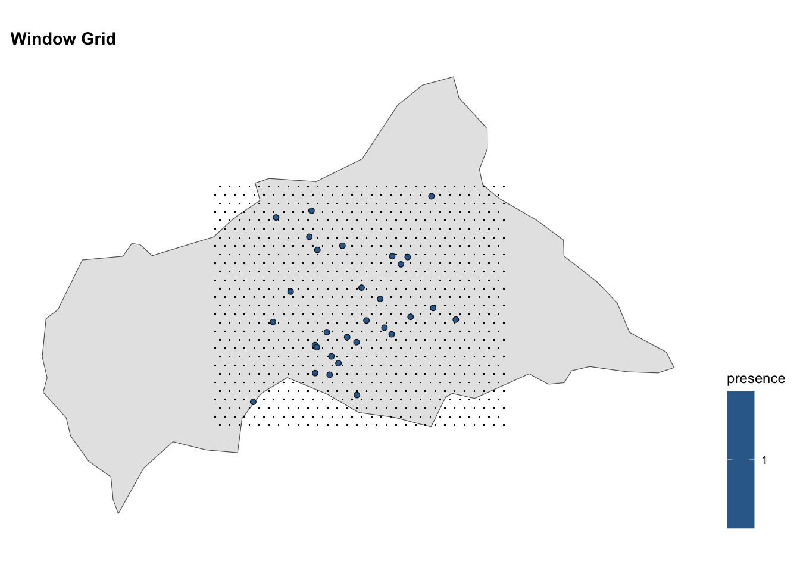
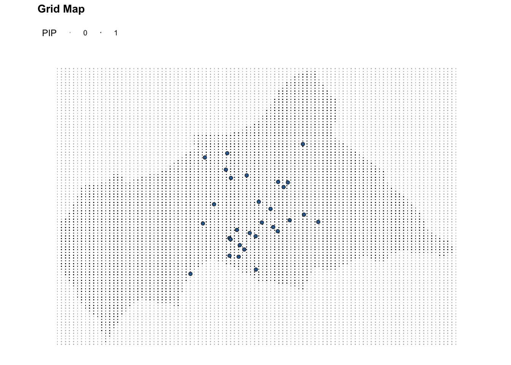
12.4.7 Create a Raster of Temperature
To visualise the temperature data on the map of the Central African Republic we create a raster template. The raster template has the same extent as the simulated infected locations and will be used to rasterize the temperature data. This means that the temperature data will be converted into a raster format, with each cell in the raster grid representing a specific temperature value. The rasterized temperature data will be visualised as a heatmap on the map, with warmer colours indicating higher temperatures.
The raster template is created using the rast() function from the {terra} package, specifying the number of rows and columns, the minimum and maximum values for the x and y coordinates, and the coordinate reference system (CRS) of the raster. If you want to know more about the package, type ?terra.
The raster template is set to have 18 rows and 36 columns, with the x and y coordinates ranging from 11 to 28 and 2 to 12, respectively.
library(terra)
raster_template <- terra::rast(nrows = 18, ncols = 36,
xmin = 11, xmax = 28,
ymin = 2, ymax = 12,
crs = st_crs(df_sf)$proj4string)Rasterize the temperature data using the rasterize() function to convert the temperature data from the data frame to a raster format based on the raster template. The temperature data are assigned to the raster cells based on the latitude and longitude coordinates.
ctr_africa_raster <- rasterize(df_sf,
raster_template,
field = "temperature",
fun = max)Before plotting the rasterized temperature data on the map of the Central African Republic, we need to convert the rasterized data to a data frame format. This will allow us to visualise the temperature data as a heatmap on the map. The rasterized data contains the temperature values for each cell in the raster grid, which are assigned based on the latitude and longitude coordinates of the temperature data.
ctr_africa_raster_df <- as.data.frame(ctr_africa_raster,
xy = TRUE)
ctr_africa_raster_df %>% head()
#> x y max
#> 200 20.20833 8.944444 24.09246
#> 203 21.62500 8.944444 21.51325
#> 205 22.56944 8.944444 23.46981
#> 234 19.26389 8.388889 25.77824
#> 235 19.73611 8.388889 25.11388
#> 268 18.31944 7.833333 25.24466# Temperature Raster
ggplot() +
geom_raster(data = ctr_africa_raster_df,
aes(x = x, y = y, fill = max)) +
viridis::scale_fill_viridis(name = "Temperature",
na.value = "transparent") +
labs(title = "Rasterized Temperature") +
theme(legend.position = "right")# Central Africa Raster
ggplot() +
geom_point(data = ctr_africa_grid_full %>% filter(pip == 1),
aes(x = x, y = y),
shape = ".") +
geom_raster(data = ctr_africa_raster_df,
aes(x = x, y = y, fill = max)) +
geom_sf(data = df_sf %>% filter(presence == 1),
aes(size = cases),
shape = 21, stroke = 0.3) +
scale_fill_gradient(low = "white", high = "grey30",
na.value = "transparent") +
labs(title = "Max Temperature in Central African Rep.",
subtitle = "Simulated Values",
size = "Number of Infections",
fill = "Max Temperature") +
theme(legend.position = "right")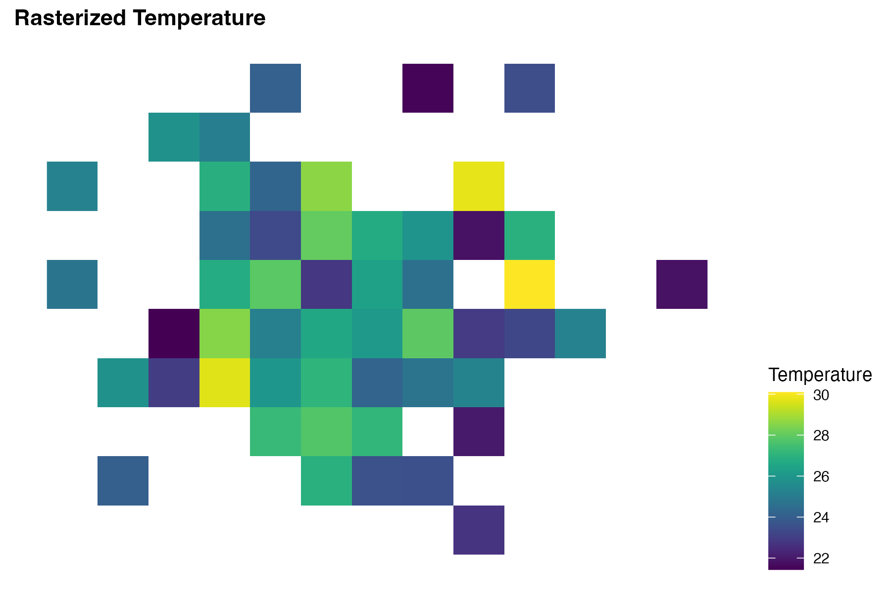
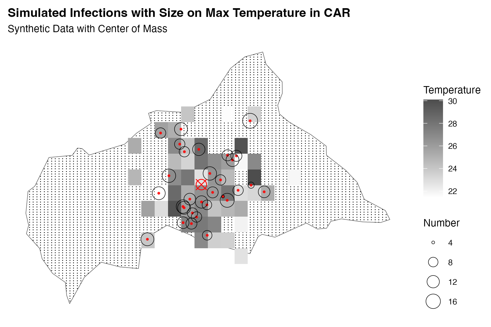
This plot shows the temperature data as a heatmap on the map of the Central African Republic, with warmer colours indicating higher temperatures. The infected locations are represented as circles with size indicating the number of infected individuals at each location.
12.4.8 The Epicenter of Infection
A central point that represents the spatial distribution of infections in the region is the center of mass. It is a useful metric for understanding the spatial dynamics of disease spread and identifying critical zones for intervention. To calculate the coordinates of the center of massindex{Center of mass} for the infections, even called the epicenter of the infections, we use the center_of_mass() function.
The center of mass is the average of the latitude and longitude of the infected individuals, weighted by the number of infected individuals at each location.
center_of_mass <- function(df) {
longitude <- sum(df$cases * df$longitude) / sum(df$cases)
latitude <- sum(df$cases * df$latitude) / sum(df$cases)
c(longitude, latitude)
}df_com <- tibble(longitude = center_of_mass(df)[1],
latitude = center_of_mass(df)[2])
df_com
#> # A tibble: 1 × 2
#> longitude latitude
#> <dbl> <dbl>
#> 1 20.7 6.47Finally, plot the infections on the map of the Central African Republic, with the temperature data represented as a raster layer. The temperature data are displayed as a heatmap, with warmer colours indicating higher temperatures. The infections are shown as points on the map, with different colours representing infected and non-infected locations.
Note, here a new package is used, the {ggnewscale} package, which is a package that allows you to add multiple colour scales to a single plot. This is useful when you want to visualise different variables with different colour scales in the same plot.
# Location of Infections
ggplot() +
geom_sf(data = df_sf, aes(shape = factor(presence),
color = factor(presence))) +
geom_point(data = df_com,
aes(x = longitude, y = latitude),
color = "red", size = 4) +
scale_colour_manual("Infection Status",
values = c("1" = "red", "0" = "blue")) +
# combine shape and colour legends
guides(color = guide_legend(title = "Infection Status"),
shape = guide_legend(title = "Infection Status")) +
labs(title = "Simulated Locations in Central African Rep.",
subtitle = "Synthetic Data with Infections Center of Mass") +
theme(legend.position = "right")
# Infections Size on Max Temperature
ggplot() +
geom_point(data = ctr_africa_grid_full %>% filter(pip == 1),
aes(x = x, y = y), shape = ".") +
geom_sf(data = ctr_africa, fill = NA) +
geom_raster(data = ctr_africa_raster_df,
aes(x = x, y = y, fill = max)) +
scale_fill_gradient(low = "white", high = "grey30",
na.value = "transparent") +
geom_sf(data = df_sf %>% filter(presence == 1),
mapping = aes(group = presence),
alpha = 0.8, color = "red", size = 0.5) +
geom_sf(data = df_sf %>% filter(presence == 1),
aes(size = cases),
shape = 21, stroke = 0.3) +
geom_point(data = df_com,
aes(x = longitude, y = latitude),
color = "red", size = 4, shape = 13) +
labs(title = "Simulated Infections with Size on Max Temperature in CAR",
subtitle = "Synthetic Data with Center of Mass",
fill = "Temperature",
size = "Number") +
theme(legend.position = "right")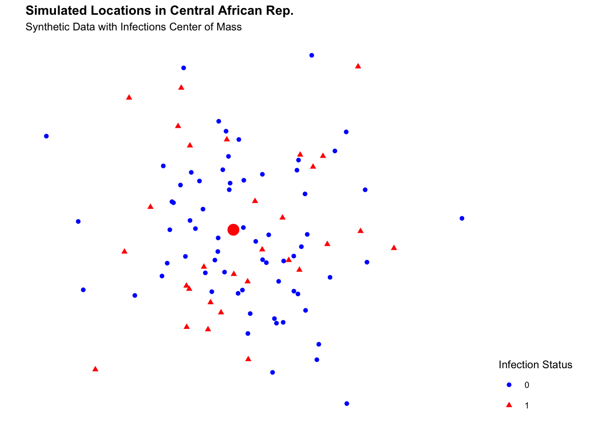
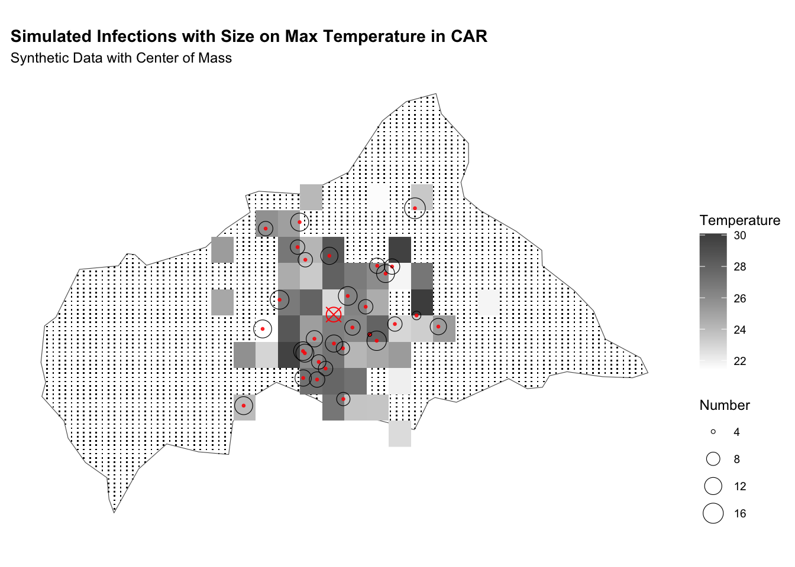
Interactive Maps
The infections can be visualised with {mapview} or {leaflet}, type of interactive maps, here is a code snippet of how to do it.
Map with Mapview:
This is the interactive map with the max temperatures for the simulated data in Central African Republic. The data represented as a raster points, with warmer colours indicating higher temperatures are shown as points on the map.
library(mapview)
mapview(df_sf,
zcol = "temperature",
map.types = "CartoDB.Voyager")Map with Leaflet:
The {leaflet} and {leaflet.extras} packages are widely explained in the package documentation. Here is shown how to make a heatmap with the infections and the center of mass.
library(leaflet)
library(leaflet.extras)
# define center of map
lat_center <- as.numeric(df_com[2])
long_center <- as.numeric(df_com[1])
# creating intensity heat map
heatmap <- df %>%
leaflet() %>%
addTiles() %>%
setView(long_center, lat_center, zoom = 4.5) %>%
addHeatmap(lng = ~longitude, lat = ~latitude,
intensity = ~cases,
max = 10, radius = 20, blur = 10) %>%
# parameter to set
addMarkers(lng = long_center, lat = lat_center)
heatmapThen, we can save the map as an image with the mapshot() function from the {mapview} package.
# webshot::install_phantomjs()
mapview::mapshot(heatmap, file = "images/11_heatmap.png")12.5 Dynamics of Disease Transmission
The spread of infectious diseases, fundamentally depends on the pattern of human contact4 and the spatial distribution of infected individuals. Understanding the spatial dynamics of disease transmission is crucial for predicting the risk of outbreaks and guiding public health interventions.
To explore the dynamics of disease transmission in Central Africa by simulating the spread of infections we use a type of network characterised by a high degree of clustering and short average path lengths between nodes called small-world network. It represents a realistic model of human contact patterns, where individuals are more likely to interact with their neighbours but can also have long-range connections with other individuals. By simulating the spread of infections in a small-world network, we can investigate how the spatial structure of the network influences the transmission dynamics and identify critical nodes for disease control.
We will use the {igraph} package to create a small-world network and simulate the spread of infections through the network. The network will consist of nodes representing individuals in Central Africa, with connections between nodes based on a small-world topology. The sample_smallworld() function generates a small-world network with the specified parametres: the number of nodes N, the average degree k, and the rewiring probability p. The average degree k determines the number of neighbours each node is connected to, while the rewiring probability p controls the likelihood of rewiring connections to create long-range connections. By adjusting the parametres k and p, we can create small-world networks with different topologies and study their impact on disease transmission dynamics.
library(igraph)
N <- nrow(df_sf) # Number of nodes
k <- 3 # Each node connected to k nearest neighbours
p <- 0.1 # Rewiring probability
small_world <- sample_smallworld(dim = 1,
size = N,
nei = k,
p = p)Assign the small_world to a new variable small_world_dev and infect 10 random nodes. The status of the nodes is defined as “S” for susceptible and “I” for infectious. The colour of the nodes is assigned based on their infection status, with infectious nodes shown in red and susceptible nodes in gold.
V(small_world)$color <- "grey"
# Create a second network for development
small_world_dev <- small_world
# Infect 10 random nodes
V(small_world_dev)$status <- "S" # Susceptible
infected_nodes <- sample(V(small_world_dev), 10)
V(small_world_dev)$status[infected_nodes] <- "I" # Infectious
# Assign colours based on infection status
V(small_world_dev)$color <-
ifelse(V(small_world_dev)$status == "I",
"black", "grey80")Plot the graphs:
par(mfrow = c(1,2))
set.seed(06082024)
plot(small_world,
vertex.size = 8,
vertex.label = NA,
edge.arrow.size = 0.5,
edge.width = 0.5)
plot(small_world_dev,
vertex.size = 8,
vertex.label = NA,
edge.arrow.size = 0.5,
edge.width = 0.5)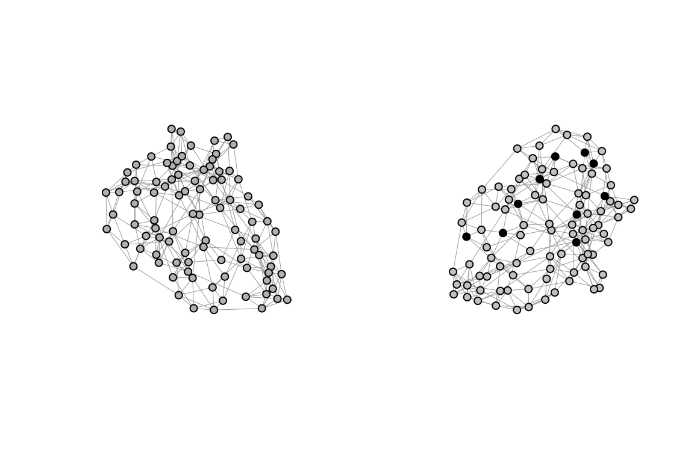
We use the Central African Rep. grid of points for prediction, and transform it to a simple features object, with the mean values of the covariates for simplicity.
ctr_africa_grid <- ctr_africa_grid_full %>%
filter(pip == 1)
ctr_africa_grid_sf <- ctr_africa_grid %>%
st_as_sf(coords = c("x", "y"), crs = 4326) %>%
st_make_valid() %>%
mutate(temperature = mean(df$temperature))
infected_sf <- df_sf %>%
filter(presence == 1) %>%
st_make_valid()Visualise the grid of points and the observed infections on the map of the Central African Republic. To understand the spatial distribution of infections and the covariates for prediction, we use the small-world network made above, to simulate the connections between individuals. Assign the attributes to the nodes of the small-world network based on the synthetic data (df_sf). The attributes include the type of individual (infected or non-infected), the latitude and longitude coordinates, and the number of infected individuals. The edges of the network represent the connections between nodes.
coords <- st_coordinates(df_sf$geometry)
# Assign attributes to nodes
V(small_world)$presence <- df_sf$presence
V(small_world)$longitude <- coords[,1]
V(small_world)$latitude <- coords[,2]
V(small_world)$cases <- df_sf$casesedges <- igraph::as_data_frame(small_world, what = "edges")
nodes <- coords %>%
as_tibble() %>%
rename(longitude = X, latitude = Y)%>%
mutate(id = 1:nrow(.))
edges <- edges %>%
left_join(nodes, by = c("from" = "id")) %>%
rename(lat_from = latitude,
lon_from = longitude) %>%
left_join(nodes, by = c("to" = "id")) %>%
rename(lat_to = latitude,
lon_to = longitude)ggplot() +
geom_sf(data = ctr_africa_grid_sf,
shape = 21, stroke = 0.5,
fill = NA, size = 0.5, color = "grey") +
geom_sf(data = infected_sf,
aes(size = cases),
shape = 21, stroke = 0.2, color="black") +
scale_color_continuous(name = "Observed",
low = "white", high = "red") +
labs(title = "Observed Infections") +
theme(legend.position = "right")
ggplot() +
geom_sf(data = ctr_africa, fill = NA) +
geom_sf(data = ctr_africa_grid_sf,
shape = 21, stroke = 0.5,
fill = NA, size = 0.5, color = "grey") +
geom_segment(data = edges,
aes(x = lon_from, y = lat_from,
xend = lon_to, yend = lat_to),
color = "grey20", alpha = 0.2, linewidth = 0.2) +
geom_sf(data = df_sf,
aes(shape = factor(presence),
color = factor(presence)),
size = 0.5) +
geom_sf(data = infected_sf,
aes(size = cases),
shape = 21, stroke = 0.2, color="black") +
guides(color = "none") +
scale_color_manual(values = c("0" = "grey20", "1" = "red")) +
labs(title = "Small-World Network with Infection Status",
x = "Longitude", y = "Latitude", shape = "Presence") +
theme(legend.position = "right")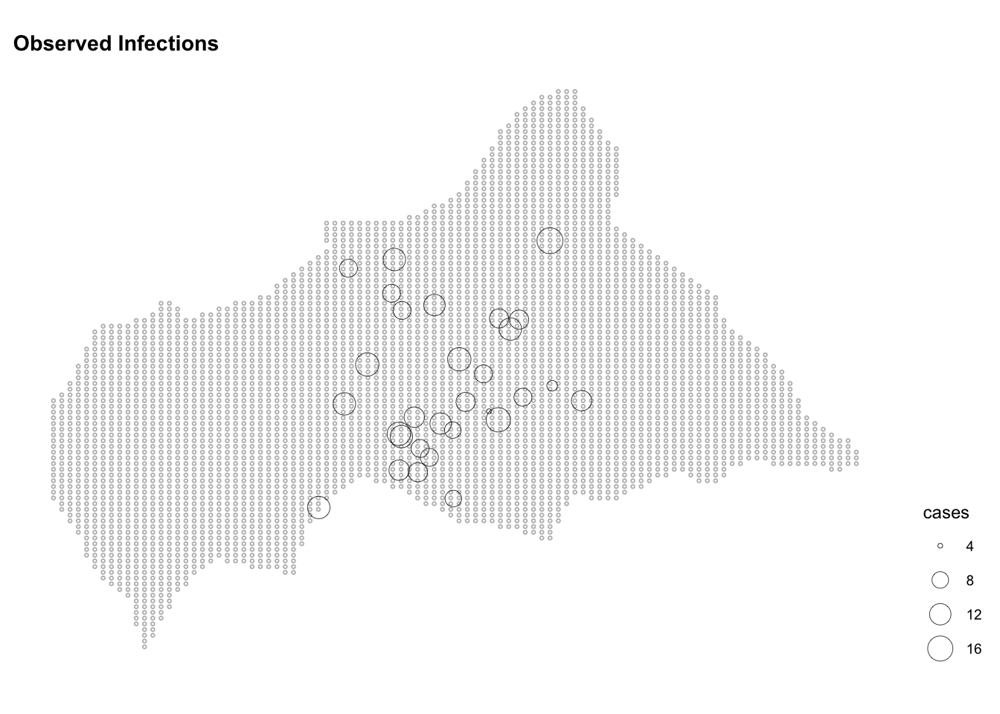
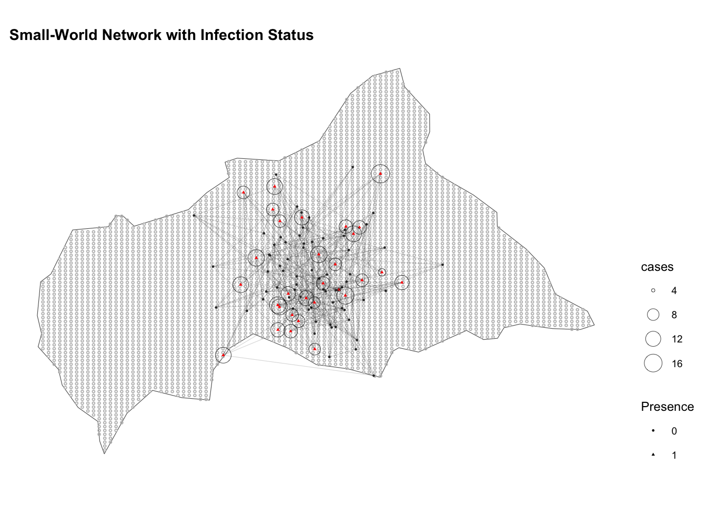
The clustering of close-proximity contacts that occurs within individuals is an important factor in the spread of diseases and subject of many mathematical models.
12.5.1 The Euclidean distance
To estimate the likelihood of transmission between individuals based on their spatial proximity the Euclidean distance is used. It is calculated as the square root of the sum of the squares of the differences between corresponding coordinates of the two points.
The Euclidean distance formula:
d_{i,j} = \sqrt{(x_i - x_j)^2 + (y_i - y_j)^2} \tag{12.1}
Where: (x_i, y_i) are the coordinates (e.g., latitude and longitude) of the first point (A), e.g., infected individual, and (x_j, y_j) are the coordinates of the second point (B), e.g., susceptible individual or location.
It calculates the straight-line distance between two points in a two-dimensional space, which can be applied to model the spatial spread of infectious diseases based on the proximity of individuals or locations.
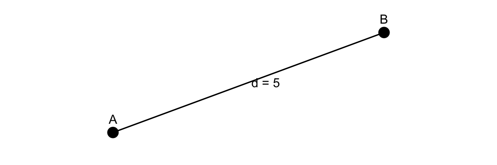
To calculate the Euclidean distance we make a function that considers the distance between the center of mass and the infection coordinates.
# helper function for calculating euclidean distance metric
euclidean_distance <- function(longitude, latitude,
long_com, lat_com) {
long_distances <- (longitude - long_com[1])^2
lat_distances <- (latitude - lat_com[1])^2
return((long_distances + lat_distances) * 0.5)
}There are other type of distance metrics that can be used, such as the Manhattan distance, which calculates the sum of the absolute differences between the coordinates of two points, the Mahlanobis distance, which considers the correlation between the variables, and the Chebyshev distance, which calculates the maximum difference between the coordinates of two points.
12.5.2 Spatial Autocorrelation
Spatial autocorrelation refers to the principle that spatial data points close to each other are more likely to have similar values than those further apart. By analysing the spatial distribution of cases, areas with high spatial autocorrelation indicated clusters where infections spread is particularly intense.
Using tools like Moran’s I and its variants, infection hotspots can be detected by identifying areas where high case rates cluster together. To check the presence of spatial autocorrelation the Global Moran’s law is used:
I = \frac{N \sum_{i=1}^{N} \sum_{j=1}^{N} w_{ij} (x_i - \bar{x})(x_j - \bar{x})}{W \sum_{i=1}^{N} (x_i - \bar{x})^2} \tag{12.2}
Where x_i and x_j are the values of the variable of interest at location i and j, \bar{x} is the mean value and N indicates the number of spatial units, and w_{ij} are the spatial weight between locations.
I measures the degree to which infection is clustered, dispersed or randomly distributed, with values ranging from -1 indicating perfect dispersion to +1 indicating perfect spatial clustering. A value of 0 indicates no spatial autocorrelation, suggesting a random spatial pattern.
We use the {spdep} package, which provide dnearneigh(), nb2listw(), and moran.test() functions for calculating the neighbourhood contiguity by distance, the spatial weights for neighbours lists, and finally the Moran’s I test for spatial autocorrelation, respectively.
library(spdep)
library(sp)
coordinates(df) <- ~longitude + latitude
# Define neighbours (using a distance threshold, for example)
# Neighbours within a distance of 2 units
nb <- dnearneigh(coordinates(df), 0, 2)
# Create spatial weights
lw <- nb2listw(nb, style="W")
# Calculate Moran's I for infections
moran_result <- moran.test(df$cases, lw)
moran_result
#>
#> Moran I test under randomisation
#>
#> data: df$cases
#> weights: lw
#>
#> Moran I statistic standard deviate = -0.18432, p-value = 0.5731
#> alternative hypothesis: greater
#> sample estimates:
#> Moran I statistic Expectation Variance
#> -0.0126043530 -0.0101010101 0.0001844513The result of the Moran’s I test of -0.013 shows a slight negative spatial autocorrelation, indicating that the location of infected individuals is slightly dispersed across the region. This suggests that the spatial distribution of infections is not significantly clustered or dispersed, but rather randomly distributed. The p-value of 0.5731 indicates that the observed Moran’s I value is not statistically significant, suggesting that the spatial distribution of infections is consistent with a random spatial pattern. And we know it is as we have simulated the data.
12.5.3 Spatial Proximity with Kriging
Although the Moran’s I test is useful for understanding the overall spatial pattern of infections, it does not provide detailed information on the spatial distribution of cases across the region. To estimate the spatial distribution of infections and predict the risk of outbreaks, we can use spatial interpolation techniques such as Kriging.5
This method is used to estimate the spatial distribution of cases by creating a raster of the predicted spatial distribution of infections. It creates a continuous surface that estimates the risk of infection across the entire study area by interpolating the number of infected individuals across a region.
For example, the application of Kriging was used to predict the spatial distribution of Dengue outbreaks in regions like Khyber Pakhtunkhwa, Pakistan.6 Similarly, during the COVID-19 pandemic, Empirical Bayesian Kriging (EBK)7 was used to estimate the spatial distribution of COVID-19 cases in sub-Saharan Africa. This approach combined time series data of confirmed cases with socio-demographic indicators to create detailed spatial risk maps, aiding in understanding and controlling the outbreak.
Particularly useful for visualising the spatial dynamics of disease spread, while considering the impact of environmental factors such as temperature, or humidity on disease transmission; Kriging requires an estimation of the variance of points at locations.
For estimating the variance, a variogram model is fit to the observed data. The variogram is a function of the distance h that describes the degree of spatial dependence of a spatial random field or stochastic process. It takes consideration of the spatial auto-correlation of the data. This means, for instance, the number of cases observed in one location are supposed to be correlated with the number of cases observed in nearby locations. This also considers the environmental variables that interact with the disease transmission.
The variogram model formula:
\gamma(h)= \frac{1}{2N(h)} \sum_{i=1}^{N(h)} (Z(x_i) - Z(x_i + h))^2 \tag{12.3}
Where: \gamma(h) is the semivariance, N(h) is the number of pairs of points separated by a distance h, Z(x_i) is the value of the variable at location x_i, and Z(x_i + h) is the value of the variable at location x_i + h.
We use the {gstat} package to perform Kriging with variogram()8,9 fit.variogram(), and gstat() functions to perform Universal Kriging, a kriging method that allows to incorporate an external drift, such as temperature. The predictions are visualised on the grid of points generated earlier, with warmer colours indicating higher predicted values.
library(gstat)v <- variogram(object = cases ~ temperature, data = df_sf)
v_model <- fit.variogram(v, model = vgm("Sph"))
plot(v, model = v_model)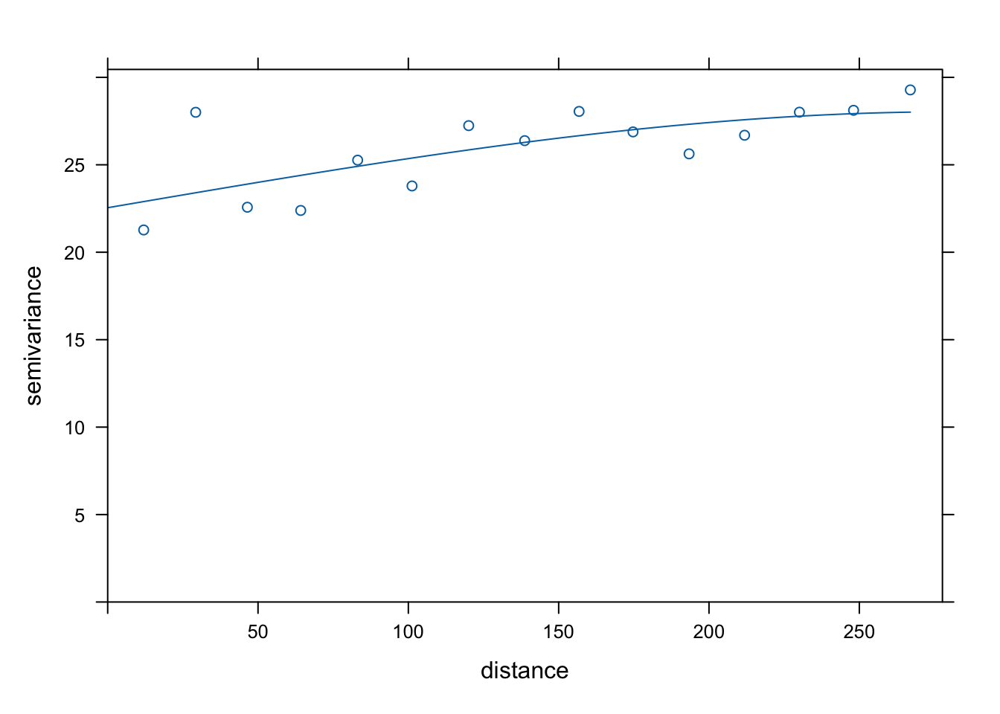
Or, just use the kbfit() function,10 which tries different initial values and models to find the best fit for the variogram, the function can be used directly from the book package hmsidwR::kbfit().
Then, the Kriging technique is applied by using the gstat::gstat() function,11 to predict the number of infected individuals at unobserved locations, based on the best variogram model.
Kriging Model Formula:
Z(u) = \sum_{i=1}^{n} \lambda_i Z(x_i) \tag{12.4}
Where: Z(u) is the predicted value at location u, \lambda_i is the weight assigned to each observed value Z(x_i), and n is the number of observed values.
The predictions are visualised on the grid of points generated earlier, with warmer colours indicating higher predicted values. The predictions are stored in the kpred object, which contains the predicted values and the variance of the predictions.
# Perform Kriging
k <- gstat::gstat(formula = presence ~ temperature,
data = df_sf,
model = v_model)
kpred <- predict(k, newdata = ctr_africa_grid_sf)
#> [using universal kriging]
data.frame(geo = kpred$geometry,
var = kpred$var1.var,
pred = kpred$var1.pred) %>%
head()
#> geometry var pred
#> 1 POINT (14.58986 4.688027) 29.18857 0.3473599
#> 2 POINT (14.58986 4.777671) 29.18857 0.3473599
#> 3 POINT (14.58986 4.867316) 29.18857 0.3473599
#> 4 POINT (14.58986 4.95696) 29.18857 0.3473599
#> 5 POINT (14.58986 5.046603) 29.18857 0.3473599
#> 6 POINT (14.58986 5.136248) 29.18857 0.3473599Visualise predictions:
ggplot() +
geom_sf(data = kpred,
aes(fill = var1.pred),
shape=21, stroke=0.5) +
geom_sf(data = infected_sf) +
scale_fill_viridis_c() +
labs(title = "Kriging Prediction in Central African Rep.") +
theme(legend.position = "right")
ggplot() +
geom_sf(data = kpred,
aes(fill = var1.var),
shape=21, stroke=0.5) +
geom_sf(data = infected_sf) +
scale_fill_viridis_c() +
labs(title = "Kriging Variance in Central African Rep.") +
theme(legend.position = "right")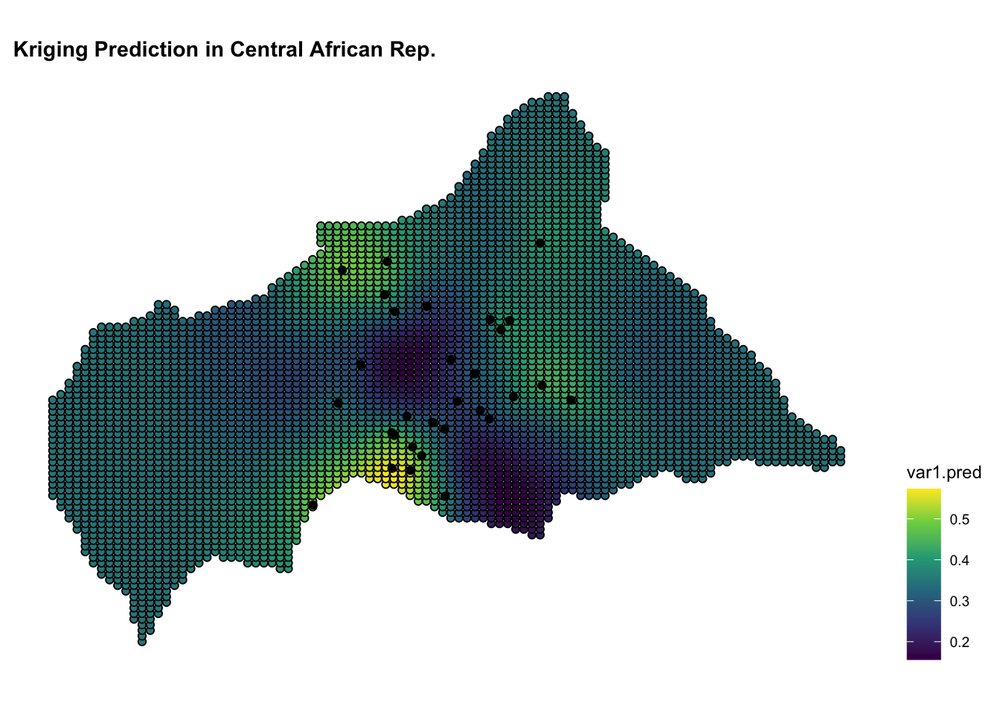
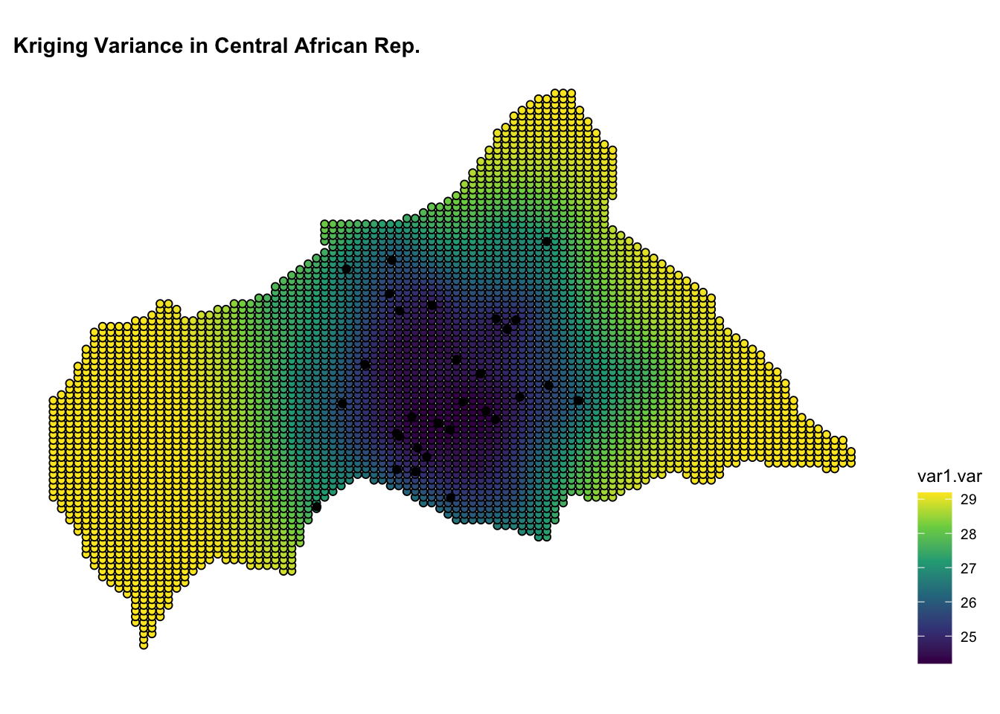
12.6 Mapping Risk of Infections
To map the risk of infections in Central Africa, we can combine the Kriging predictions with the spatial distribution of infections and the small-world network. The Kriging predictions provide an estimate of the risk of infections across the region, while the spatial distribution of infections and the small-world network represent the spatial dynamics of disease transmission.
The risk of infections is visualised on the map of Central African Republic, with warmer colours indicating higher predicted values. The spatial distribution of infections is shown as points on the map, with different colours representing infected and non-infected locations. The small-world network is overlaid on the map, showing the connections between nodes and the spatial dynamics of disease transmission.
This is a different way to visualise the Kriging predictions, first a data frame is created with the coordinates and the predicted values, and then the predictions plotted on the map of Central African Republic. The predictions are shown as a raster layer.
kriging_df <- kpred %>%
sf::st_coordinates() %>%
cbind(as.data.frame(kpred) %>% select(var1.pred)) %>%
rename(longitude = X, latitude = Y) ggplot() +
geom_sf(data = ctr_africa, fill = "grey") +
geom_raster(data = kriging_df,
aes(x = longitude, y = latitude,
fill = var1.pred)) +
scale_fill_viridis_c() +
geom_segment(data = edges,
aes(x = lon_from, y = lat_from,
xend = lon_to, yend = lat_to),
color = "grey", alpha = 0.2, linewidth = 0.2) +
geom_sf(data = df_sf %>% filter(presence == 1),
aes(size = cases),
# show.legend = F,
shape = 21, stroke = 0.2) +
geom_sf(data = df_sf,
aes(color = factor(presence)),
shape = ".") +
scale_color_manual(values = c("0" = "grey", "1" = "red")) +
guides(size = guide_legend(order = 1),
color = guide_legend(order = 2),
fill = guide_colorbar(order = 3)) +
labs(title = "Kriging Prediction of Infections Size on Max Temperature",
fill = "Prediction of Infections",
size = "Infections Size",
color = "Presence") +
ggthemes::theme_map() +
theme(legend.position = "bottom",
legend.box = "vertical",
legend.key.size = unit(0.5, "cm"),
legend.title = element_text(size = 8),
legend.text = element_text(size = 6))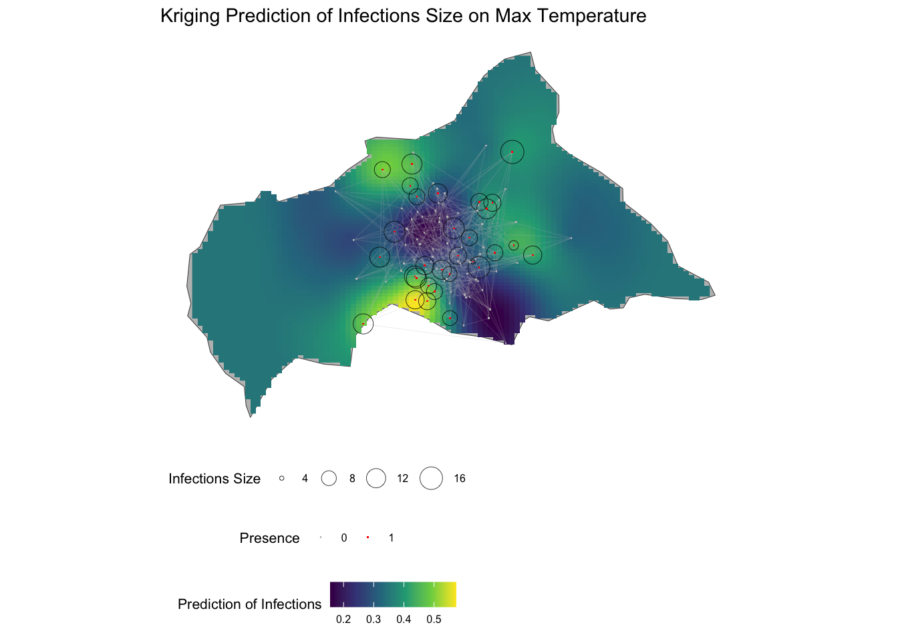
Finally, the last plot is made with the spplot() function from the {sp} package, which creates a spatial plot of the Kriging predictions. The predictions are visualised as a heatmap on the map of the Central African Republic, with warmer colours indicating higher predicted values. The plot provides a detailed view of the spatial distribution of infections and the risk of outbreaks across the region.
kriging_sp <- kriging_df
coordinates(kriging_sp) <- ~longitude+latitude
spplot(kriging_sp, "var1.pred", main = "Kriging Prediction of Infections")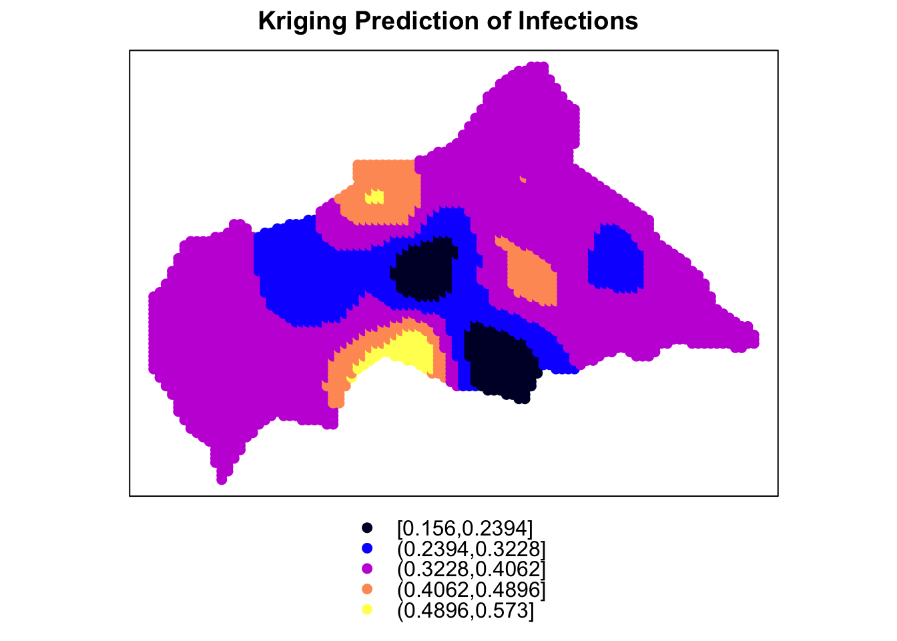
12.7 Summary
In this chapter, we have explored the spatial dynamics of disease transmission in Central Africa using a combination of spatial analysis techniques and visualisation tools. We have simulated the spatial distribution of infections, created a grid of points to cover the region, and visualised the spatial distribution of infections on the map of Central African Republic. We have used a small-world network to model the spatial connections between individuals and simulated the spread of infections through the network. We have shown how the Euclidean distance between points is calculated, to estimate the likelihood of transmission based on spatial proximity and performed spatial autocorrelation analysis to understand the spatial pattern of infections. We have used Kriging to estimate the spatial distribution of infections and predict the risk of outbreaks across the region. The results provide valuable insights into the spatial dynamics of disease transmission and the spatial distribution of infections in Central Africa, which can inform public health interventions and guide efforts to control the spread of infectious diseases.
Null null, “Ebola Virus Disease in West Africa the First 9 Months of the Epidemic and Forward Projections,” New England Journal of Medicine 371, no. 16 (October 16, 2014): 1481–95, doi:10.1056/NEJMoa1411100.↩︎
https://www.nceas.ucsb.edu/sites/default/files/2020-04/OverviewCoordinateReferenceSystems.pdf↩︎
More information on the coordinate reference system is here: https://epsg.io/.↩︎
Erik M. Volz et al., “Effects of Heterogeneous and Clustered Contact Patterns on Infectious Disease Dynamics,” PLoS Computational Biology 7, no. 6 (June 2, 2011): e1002042, doi:10.1371/journal.pcbi.1002042.↩︎
“Kriging,” July 18, 2024, https://en.wikipedia.org/w/index.php?title=Kriging&oldid=1235203584.↩︎
Hammad Ahmad et al., “Spatial Modeling of Dengue Prevalence and Kriging Prediction of Dengue Outbreak in Khyber Pakhtunkhwa (Pakistan) Using Presence Only Data,” Stochastic Environmental Research and Risk Assessment 34, no. 7 (July 1, 2020): 1023–36, doi:10.1007/s00477-020-01818-9.↩︎
Amobi Andrew Onovo et al., “Using Supervised Machine Learning and Empirical Bayesian Kriging to Reveal Correlates and Patterns of COVID-19 Disease Outbreak in Sub-Saharan Africa: Exploratory Data Analysis,” n.d., doi:10.1101/2020.04.27.20082057.↩︎
Edzer J Pebesma, “Multivariable Geostatistics in s: The Gstat Package,” Computers & Geosciences 30, no. 7 (August 1, 2004): 683–91, doi:10.1016/j.cageo.2004.03.012.↩︎
Hans Wackernagel, “Linear Regression and Simple Kriging,” ed. Hans Wackernagel (Berlin, Heidelberg: Springer, 2003), 15–26, doi:10.1007/978-3-662-05294-5_3.↩︎
“Kriging Best Fit: Kbfit - Fit Variogram Models and Kriging Models to Spatial Data and Select the Best Model Based on the Metrics Values Kbfit,” n.d., https://fgazzelloni.github.io/hmsidwR/reference/kbfit.html.↩︎
Paula Moraga, Chapter 14 Kriging | Spatial Statistics for Data Science: Theory and Practice with R, n.d., https://www.paulamoraga.com/book-spatial/kriging.html?q=kri#kriging.↩︎